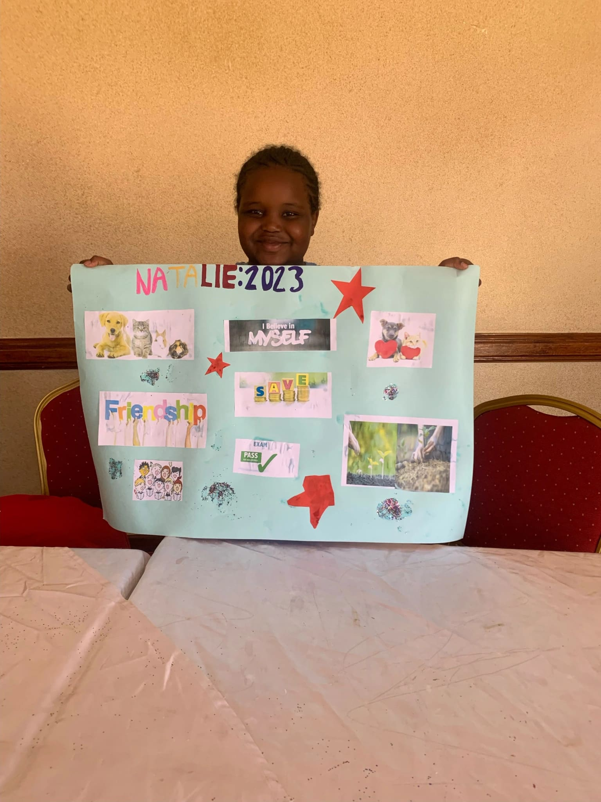

Hello, amazing readers. A wise man once said that if you aim for the moon, you might just hit the stars, and if you aim at nothing, you will hit nothing. While having goals in life is crucial, picturing the goal also has its charm.
A vision board is a collage of pictures and words representing a person's wishes and goals that tend to be an inspiration or motivation. We decided to make our vison boards and it was quite an interesting activity.
We started out by finding pictures that represent some of the goals we had written out. With the help of our teachers, we cut out the pictures and stuck them on our blank canvases.
Our teachers encouraged us to place our vision boards in our rooms where we could see them first thing every morning. This would serve as a constant reminder and motivation for us as we start our day to keep us focused. Human beings are primarily visual learners; that means that we retain information better when we visualize it.
As we were making the vision boards they, helped feel connected with our goals because the goals now seemed real and achievable in picture form. The pictures helped us dream in our mind and impossibility was not an option.
Our scripture of the day was from the book of Proverbs 29:18:- Where their is no vision a people perish, but he that keepeth the law happy is he.
We are very proud of what we made and excited to share the same with you. We hope that this will motivate you to create your own vision board and visualize your goals and dream.
